Hei, jeg liker australia. Dette er en en liten boks. Vet ikke hvordan den blir enda
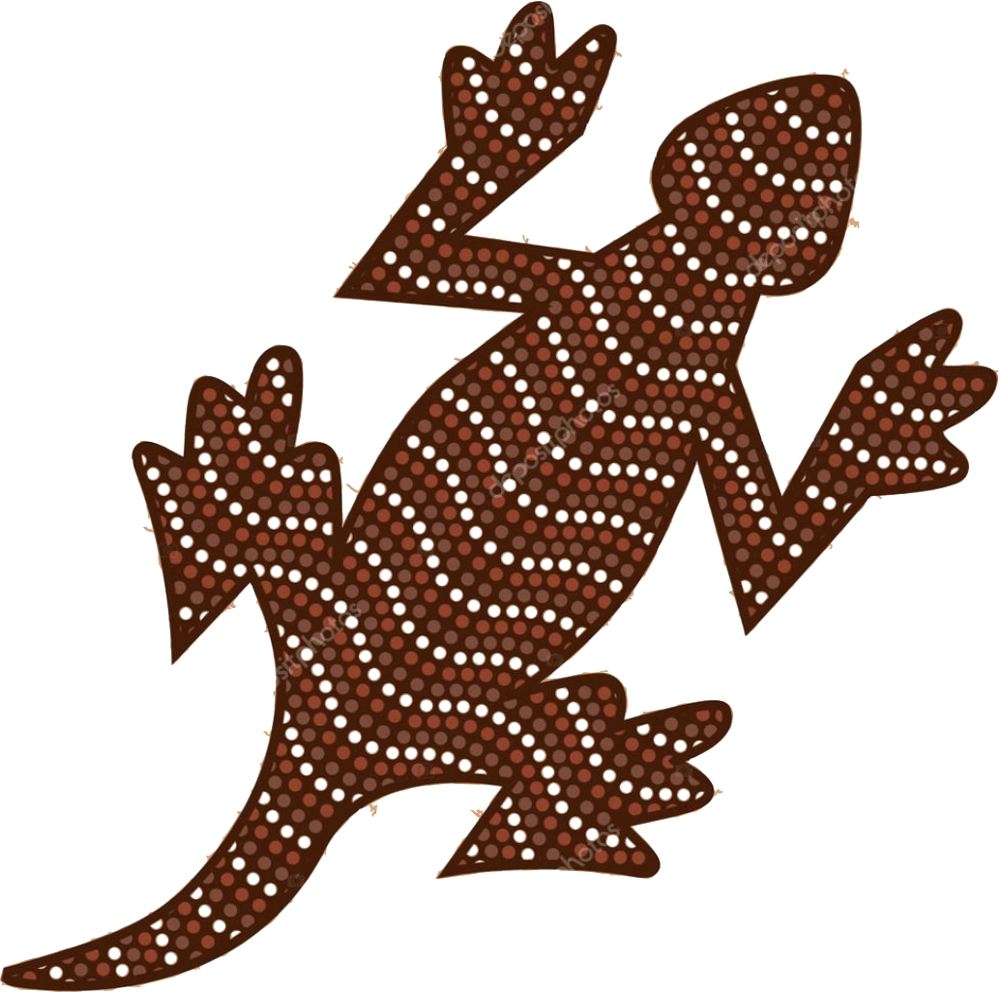
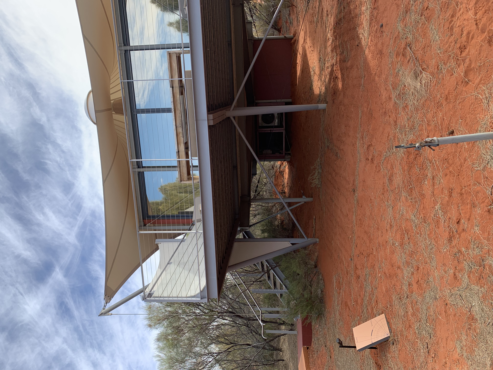
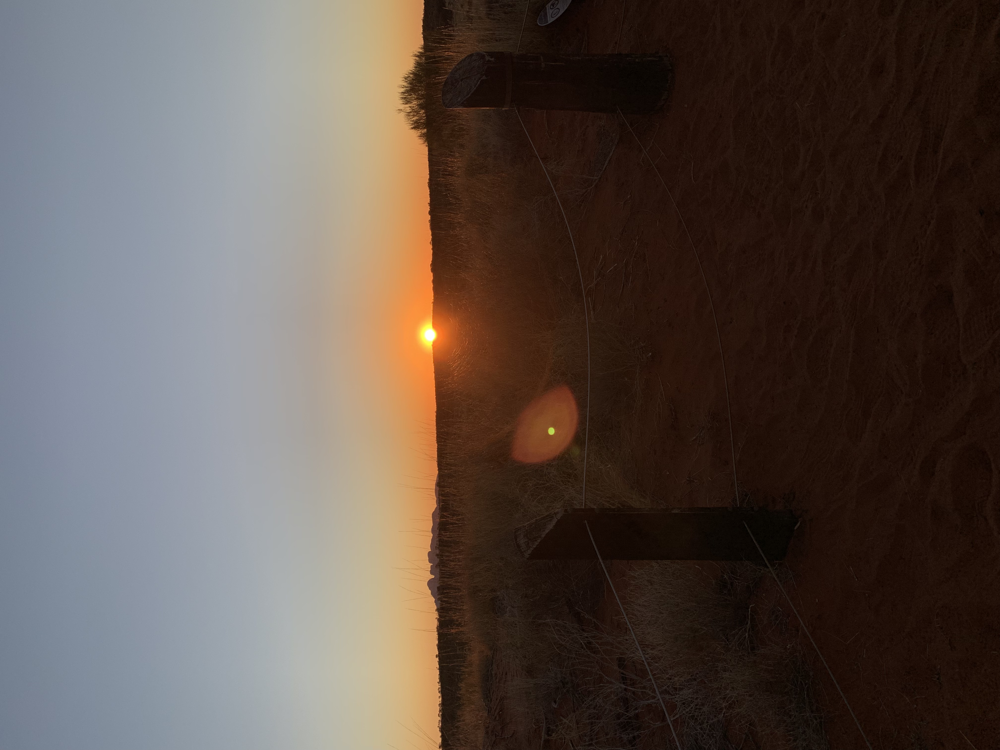
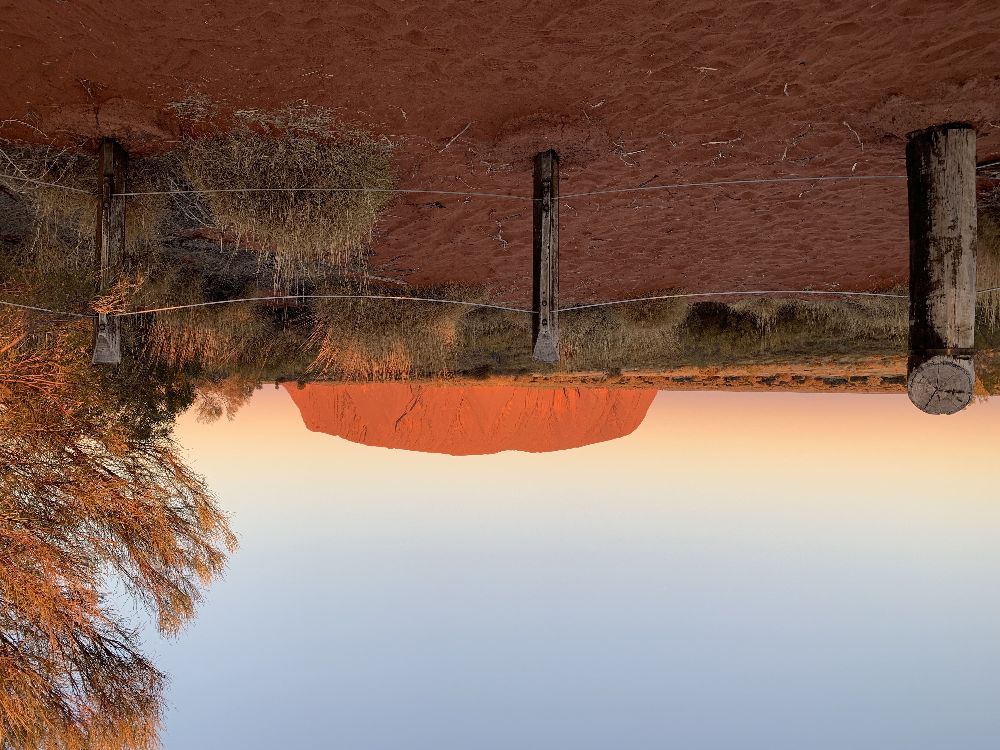
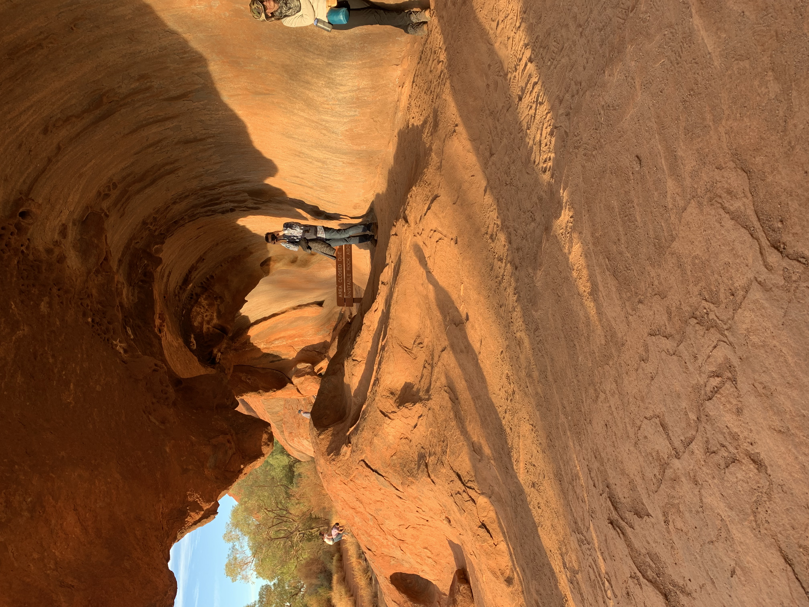
Med utsikt direkte til Uluru og over ørkenen til Kata Tjuta, er Longitude 131˚ Australias mest berømte luksusleir. Blandt de rødroste sanddynene i den sentrale ørkenen er teltpaviljonger, som hver tilbyr forbindelse med utmarka og dets arv. Oppdag levende aboriginale kunstverk sammen med relikvier fra regionens oppdagelsesreisende, en bar og restaurant som tilbyr moderne australsk mat og vennlig personale som er klare til å gjøre sitt ypperste for at du skal få best mulig opplevelse.
Uluru ligger i Uluru-Kata Tjuta nasjonalpark. Dette er en park med naturlig skjønnhet og rik kultur. Fra forbløffende fjellformasjoner til endeløse utsikter, fra skyhøye kupler til utrolige sprekker og bergkunstmalerier.
Aborginere har bodd i området rundt Uluru og Kata Tjuta i minst 30 000 år.
For Anangu har kulturen deres alltid eksistert her. Det sentrale australske landskapet (som Uluru og Kata Tjuta er en viktig del av) antas å ha blitt skapt i begynnelsen av tid av forfedres vesener.
Uluru og Kata Tjuta gir fysisk bevis på bragder som ble utført i etableringsperioden, som blir fortalt i Tjukurpa -historiene.
Anangu mener at de er direkte etterkommere av disse vesener og er ansvarlige for beskyttelse og hensiktsmessig forvaltning av disse forfedres land.
Uluru-Kata Tjuta er verdensberømt for sine spektakulære soloppganger og solnedganger. Når sollyset leker med landskapet, endrer fjellformasjonene farge foran øynene dine.
Storheten i det halvt opplyste ørkenlandskapet, gressene som svinger svakt i vinden og den engasjerende, stadig skiftende steinstrukturen gir et skuespill uten sidestykke.
1 / 8
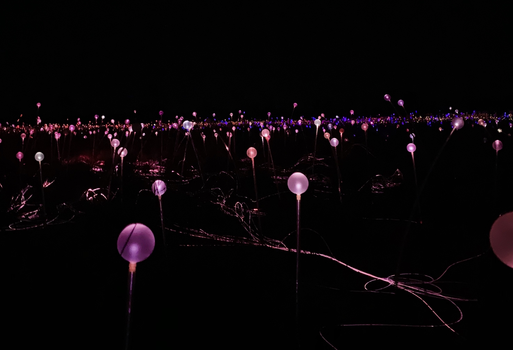
2 / 8
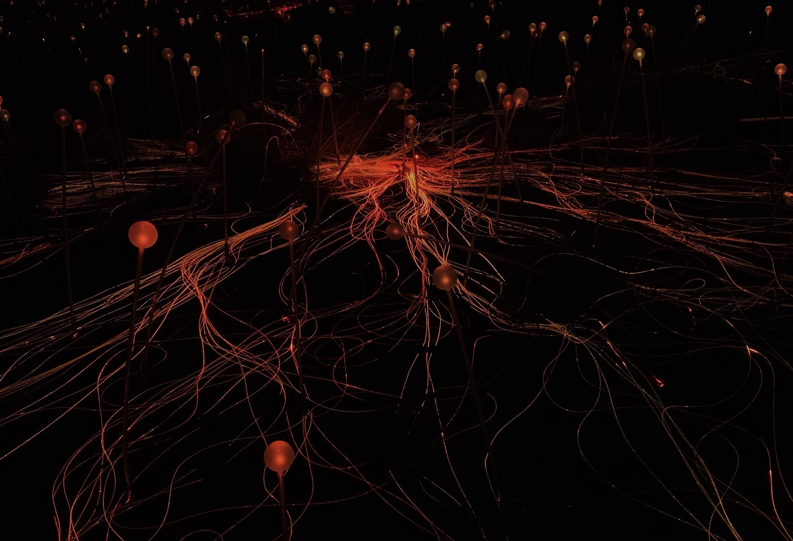
3 / 8
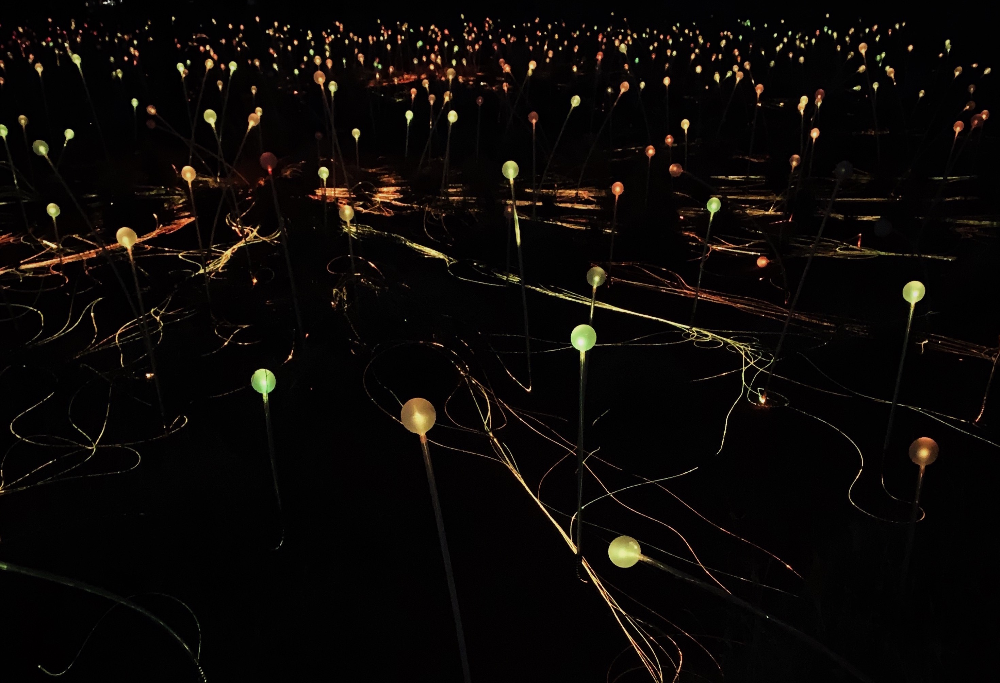
4 / 8
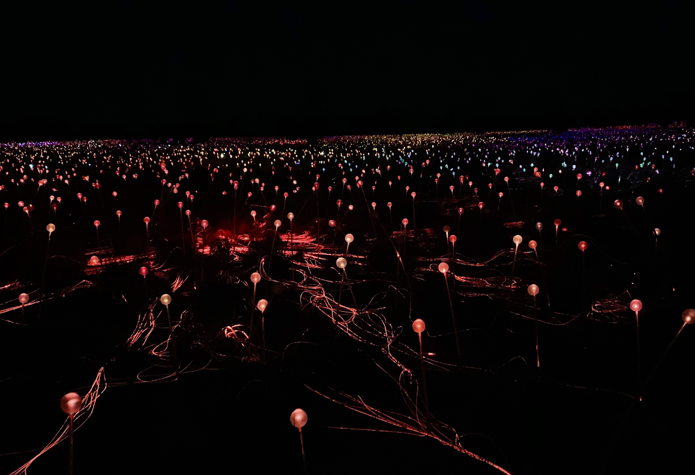
5 / 8
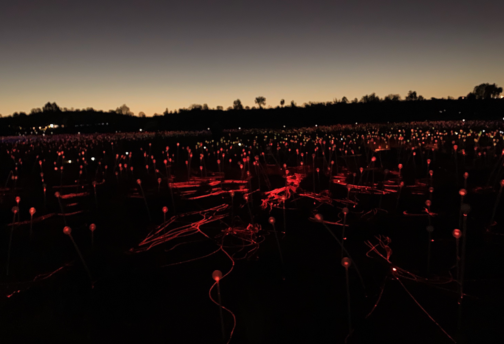
6 / 8
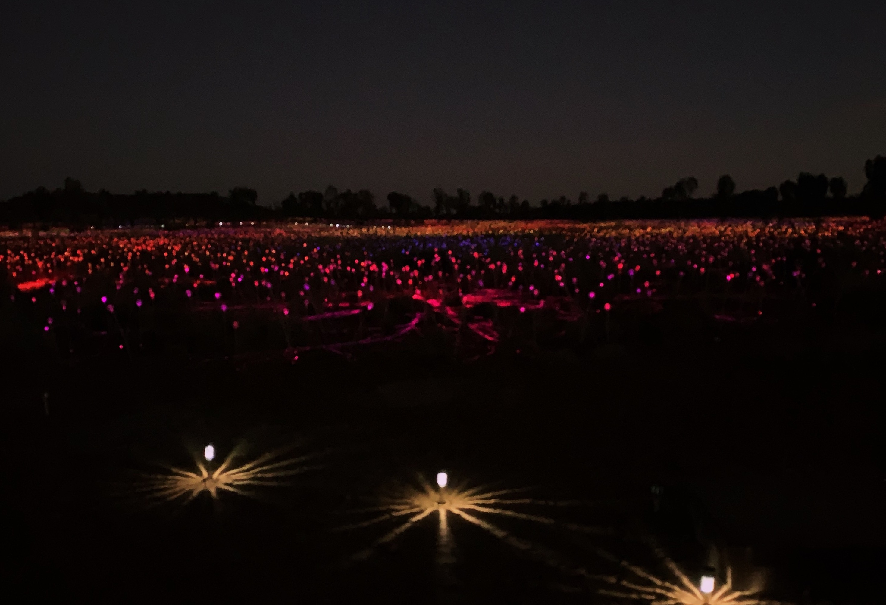
7 / 8
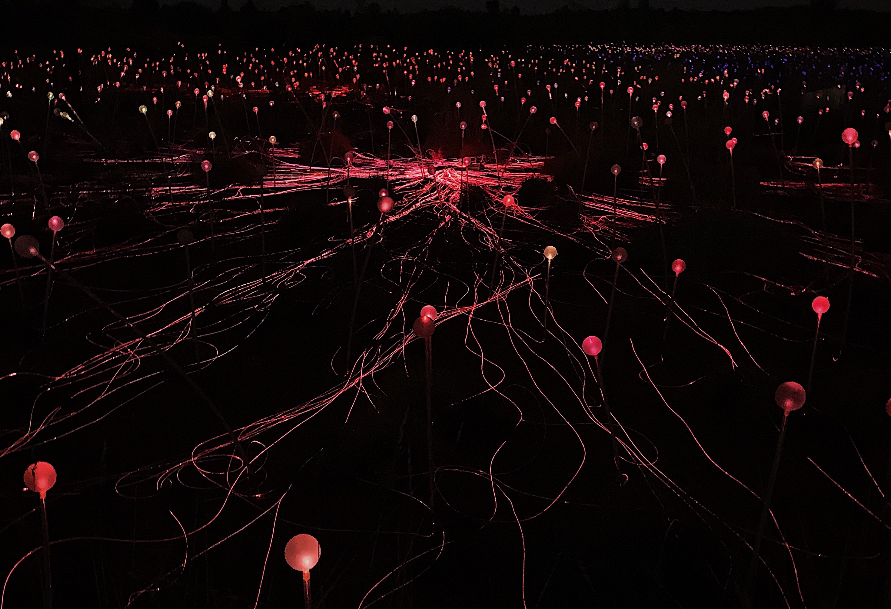
8 / 8
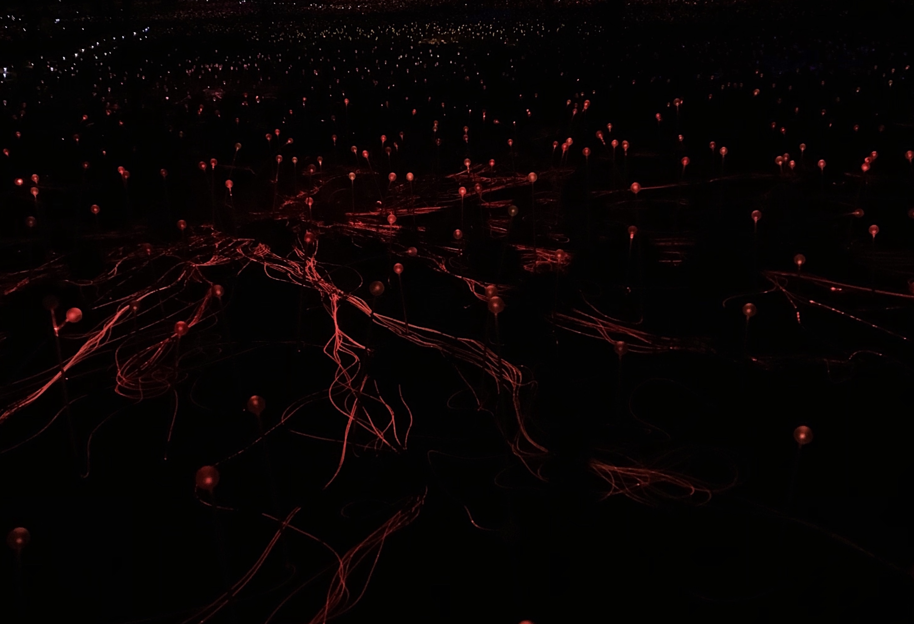
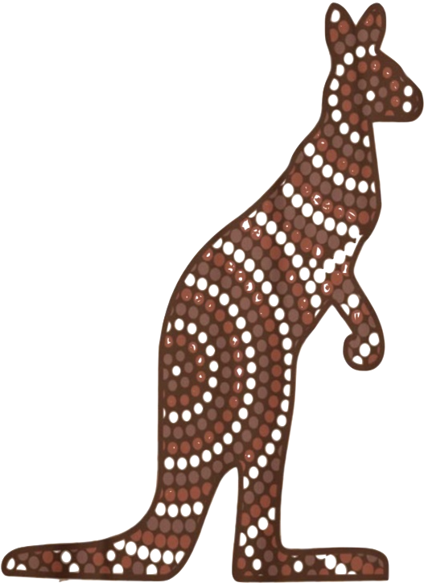
Oppdag et eventyrland i utmarken mens Ulurus solnedgangen fortsetter og sakte forsvinner omgivelsene til bakgrunnen mens lysfeltet tar sentrum.
Et eventyrland i utlandet, med det berømte fenomenet friluftskunst, består Lights of fields av rundt 50 000 individuelle stilker kronet med fargerike frostede glasspærer. Disse blomstrer og ser ut til å svinge som de blekkete natteteppene Australias åndelige hjerte.